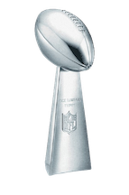

History of the NFL
- The NFL was founded in 1920 as the American Professional Football Association (APFA) before adopting its current name in 1922.
- It has grown into a cultural phenomenon, captivating audiences with its intense gameplay, iconic teams, and legendary players.
- Notable early powerhouses include the Green Bay Packers, Chicago Bears, and New York Giants.
- Key innovations like the Super Bowl, NFL Draft, and Monday Night Football further solidified its status.
- Today, the NFL boasts 32 teams divided into two conferences, each vying for the Vince Lombardi Trophy.
Teams
- The NFL is home to 32 teams, each representing a different city or region across the United States.
- Some of the most iconic teams include the Green Bay Packers, Pittsburgh Steelers, and Dallas Cowboys.
- Each team has its own unique history, traditions, and fanbase.
Iconic Players
- Legendary players like Jim Brown, Joe Montana, and Jerry Rice have left an indelible mark on the sport.
- Modern-day superstars like Tom Brady and Peyton Manning continue to captivate audiences.
- These players have achieved greatness on the field, setting records and winning championships.
Championships and Records
- Winning the Super Bowl is the pinnacle of success in the NFL, with teams like the Pittsburgh Steelers and New England Patriots among the most successful.
- Individually, players strive to set records for passing yards, rushing touchdowns, and more.
NFL Draft
- The NFL Draft is an annual event where teams select eligible college football players to join their rosters.
- The draft order is determined by teams' performance in the previous season, with trades influencing the order.
- Being selected in the draft is the realization of a lifelong dream for many players.
Impact on Society
- The NFL's impact extends beyond the football field, influencing entertainment, economics, and health.
- Players and teams are actively involved in charitable endeavors and community outreach programs.